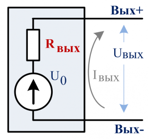

Расчет выходного сопротивления усилителя
Когда говорят о выходном сопротивлении, подразумевают модель выхода как линейной электрической цепи, в которой сопротивление Rвых включено последовательно с идеальным источником напряжения U0 (источником ЭДС), как показано на рисунке. Собственно, идеальный источник напряжения в данной эквивалентной схеме и отличает выход от входа, и отличает понятие выходного сопротивления от входного сопротивления. Также наличие активного источника напряжения или тока отличает активную цепь от пассивной.

Рис. 1
Идеальный источник напряжения называется идеальным потому, что он обладает нулевым внутренним сопротивлением (это способность отдать сколь угодно большой ток нагрузки Iвых при неизменности напряжения U0). А выходное сопротивление Rвых вносит неидеальность, присущую всем физически реализуемым (реальным) выходам напряжения и тока, и ограничивает максимальный ток нагрузки Iвых значением тока короткого замыкания:
Iвых = Iкз = U0 / Rвых .
Отметим, что применённые выше два термина выходное сопротивление и внутреннее сопротивление эквивалентны. Обычно термин выходное сопротивление применяют к объектам, для которых можно применить понятие "выход". Термин внутреннее сопротивление носит более общий характер и может быть применим к входам, выходам и любым пассивным или активным объектам.
Практически, если значение выходного сопротивления выхода неизвестно, то его можно оценить простым методом двух измерений с использованием вольтметра и резистора с известным номиналом RН (желательно близким к номинальному сопротивлению нагрузки для данного выхода или хотя бы предположительно соответствующим номинальному сопротивлению нагрузки).
Первое измерение: Измерить вольтметром напряжение холостого хода на выходе (без нагрузки) Uхх.
Второе измерение: Подсоединить к выходу резистор Rн и измерить на резисторе напряжение Uн.
Вычислить Rвых по формуле :
Rвых = Rн (Uхх– Uн) / Uн
Например:
На выходе установить напряжение 10 В.
Подключить к выходу нагрузку 4 Ом.
Измеряем напряжение на нагрузке - 9,7 В.
Значит, через нагрузку идёт (и через внутреннее сопротивление) ток равный 9,7 / 4 = 2,425 [А]
При таком токе падение напряжения на внутреннем сопротивлении составит 10 - 9,7=0,3 В.
Величина выходного равна Rвых= 0,3 / 2,425 = 0,124 [Ом].
Метод применим и для выходов напряжения переменного тока, если вольтметр способен измерять средневадратическое значение (СКЗ) напряжения при данной частоте сигнала, тогда Rвых будет иметь физический смысл модуля импеданса выходного сопротивления на данной частоте сигнала.
Но есть ограничение: данный метод нельзя применять к выходам, для которых отсутствие нагрузки является нерабочим режимом. Например, для выходов генераторов тока этот метод неприменим.